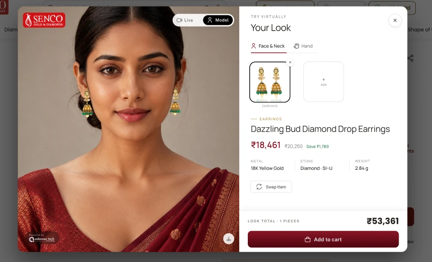

Case Study
Virtual
Try-on
A try-on plugin for jewellery e-commerce
- E-commerce Plugin
- Virtual Try-on
- Web
A plugin that can be integrated with any accessories e-commerce store and gives shoppers a seamless way to try jewellery, a whole set at a time.

Project Overview
A virtual try-on for shopping online
The product
A plugin that can be integrated with any accessories e-commerce store and provides a seamless experience for shoppers to try the jewellery on virtually.
The trial
Senco trialled the plugin. Their feedback was critical, and the results slide says so. This case study covers the web screens.
My Contribution
What I did on this project
- 01
Role & team
Product (UI/UX) Designer, working solo. Senco was the client and trial partner.
- 02
Timeline
5 weeks, from research to the web screens and the Senco trial.
- 03
What I did
Competitor research, the multi-piece “look” concept, the flow from product page to cart, consent and failure states, the web screens and a clickable prototype.
Research
Only one accessory at a time
There are a few brands in the market working on virtual try-on, like Mirrar. After doing my research I found that they only allow one accessory to be tried virtually. This was desk research on competitors; the first real feedback came from Senco’s trial.
Research Findings
What I Found
- 01
Accessories come in sets
Accessories often come in sets, and users are not able to try sets.
- 02
One piece, one cart item
Users can try only one jewellery, or push only one jewellery to the cart.
- 03
Ticket size stays small
E-commerce suffers as the ticket size is limited to one item.
Objectives
What the Plugin Had to Do
- 01
Try a full set
Let shoppers put several pieces on together, so they can see a set the way it is worn.
- 02
Buy the whole look
Let shoppers push every piece they like to the cart in one go, not just one.
- 03
Lift the ticket size
Give stores a bigger basket per try-on, instead of a single item.
User Flow
From product page to cart
- Product page“Try On” on the store
- Starting sessionLoading screen
- Notice & consentCamera, nothing stored
- Your LookFace & Neck, Hand
- No hand detectedPrompt to show your hand
- Add to lookCategory, then product
- Empty lookAdd Jewellery
- Look totalPieces and price
- Add to cartThe whole look
- LoginMobile number + OTP
- Before you goRating and compliments
Consent before camera
The camera starts only after a short notice and consent, with a plain statement that no biometric data is stored.
One look, many pieces
Face & Neck and Hand share one look; every piece added updates the piece count and the total.
Graceful when it fails
No hand in view or nothing added yet each get a clear prompt, not a blank screen.
Prototype
Web screens
Try it: click TryOn, accept, then add, swap or remove any piece.
Results & Impact
What Happened
- 01
Up to five pieces in one look
Where existing tools try one accessory, one look now holds earrings, a necklace, a nosepin, a bangle and a ring together.
- 02
The whole look in one tap
A single Add to cart takes every piece on the look, instead of one piece at a time.
- 03
Ticket size stayed small
Senco reported that the ticket size coming through the plugin was small, so the bigger-basket goal was not met in the trial.
- 04
Senco’s feedback
Senco were not happy with the overall virtual experience: the UX and UI felt broken to them. That is where a redesign would start.
Virtual Try-on
Try it on, keep the whole set
A try-on plugin built around how jewellery is really bought: in sets. The Senco trial showed the experience and the ticket size still need work.